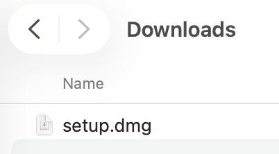
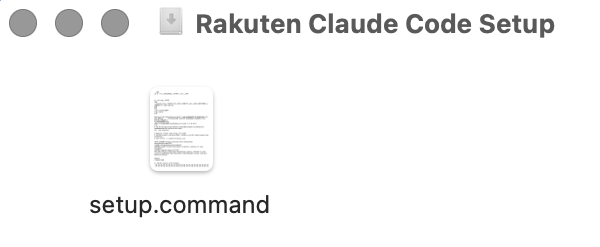
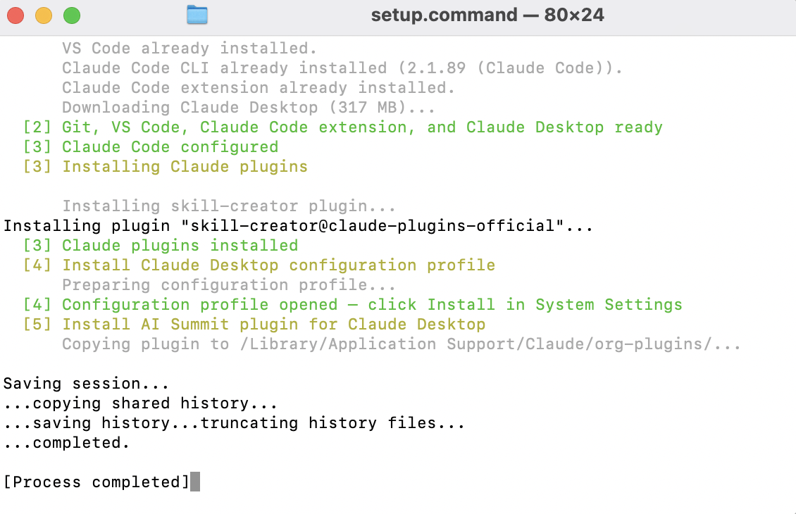
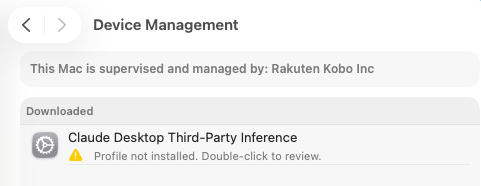
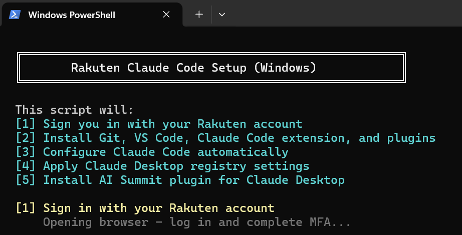

Rakuten Claude Code Setup
Installs Claude Code CLI and configures it to use the Rakuten AI gateway.
Just download, run, and you're ready to code.
Before you begin
- Time required: 5–10 minutes on Mac or Windows.
- Supported OS: macOS 14 (Sonoma) or later · Windows 10 / 11
- You will need: your Rakuten OKTA account and access to the Rakuten corporate network or VPN.
What this installs
| Component | Why |
|---|---|
| Claude Code CLI | Terminal coding agent, configured to use Rakuten AI gateway |
| Rakuten AI Gateway config | Routes Claude Code to Rakuten's Bedrock endpoint — keeps prompts internal |
| rr-standards plugin | Rakuten Rewards coding standards and forge skill for Claude Code |
Download the Setup File
Click below to download setup.command to your Mac.
This will install Claude Code CLI on your Mac and connect it to Rakuten's AI gateway.
Open setup.dmg from Downloads
Double-click the downloaded file to mount the disk image.
Open your Downloads folder — you'll see setup.dmg. Double-click it to mount.

Double-click setup.command
Run the setup script from the mounted disk image window.
The disk image window shows setup.command. Double-click it. macOS will show a security warning — click Open.


Sign in with Rakuten OKTA
A browser window will open — sign in and complete MFA.
Safari will open automatically. Enter your INTRA username (username@rakuten.com) and complete MFA to authenticate.
Let the script finish
The terminal will install Claude Code CLI and write your configuration.
A Terminal window runs the setup. Wait for Setup complete to appear before closing.

Install the Configuration Profile
Install the profile that routes Claude Code to Rakuten's AI gateway.
System Settings will open to the Device Management pane. Find Rakuten Claude AI Configuration in the Downloaded section and click Install…


Verify Claude Code is connected
Run one command to confirm Claude Code is using the Rakuten endpoint.
Open Terminal and run claude. Type the prompt below and verify the response.
A correct response names a Claude model (Sonnet, Opus, or Haiku) and gives today's date. If it says it can't access the internet or fails to respond, go back to the previous step and ensure the profile is installed.
You're all set!
Claude Code is ready to use with Rakuten's AI gateway.
Open any project folder in Terminal and run claude. Try one of these to get started:
- Review this file for potential bugs and explain what each function does.
- Write unit tests for the selected function using our testing conventions.
- Refactor this code to follow the rr-standards guidelines.
Download the Setup Script
Click below to download setup.ps1 to your PC.
This will install Claude Code CLI on your PC and connect it to Rakuten's AI gateway.
Right-click & Run with PowerShell
Find setup.ps1 in Downloads and run it.
Right-click setup.ps1 in Downloads and select Run with PowerShell.

Set-ExecutionPolicy Bypass -Scope Process -Force
Sign in with Rakuten OKTA
A browser will open — sign in and complete MFA.
Your browser opens automatically. Enter your INTRA username (username@rakuten.com) and complete MFA.

Let the script finish
PowerShell installs Claude Code CLI and writes your configuration.
Wait for Setup complete to appear in the PowerShell window before closing it.

Verify Claude Code is connected
Open a new terminal and confirm Claude Code works.
Open a new PowerShell window and run claude. Type the prompt below.
A correct response names a Claude model and gives today's date.
You're all set!
Claude Code is ready to use with Rakuten's AI gateway.
Open any project folder in PowerShell and run claude. Try one of these:
- Review this file for potential bugs and explain what each function does.
- Write unit tests for the selected function using our testing conventions.
- Refactor this code to follow the rr-standards guidelines.